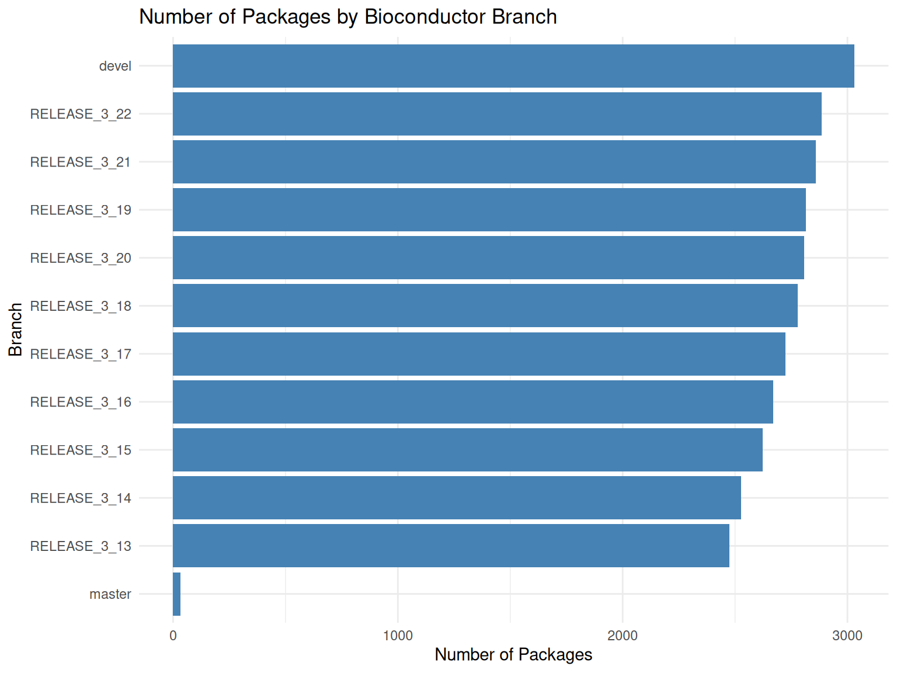
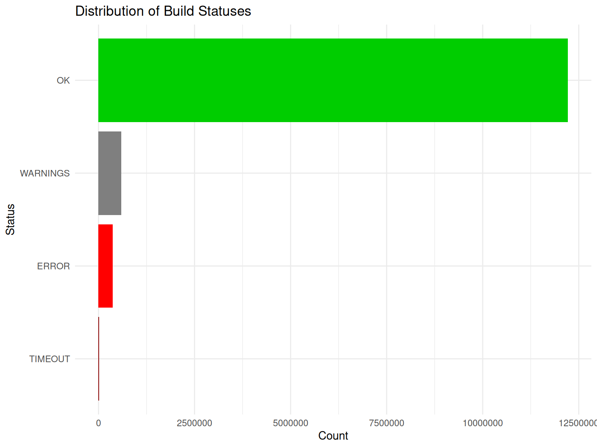
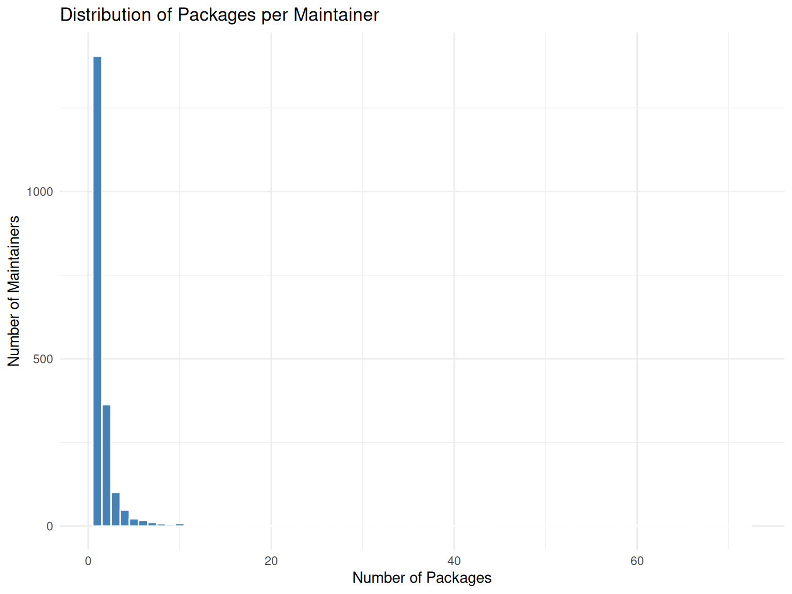
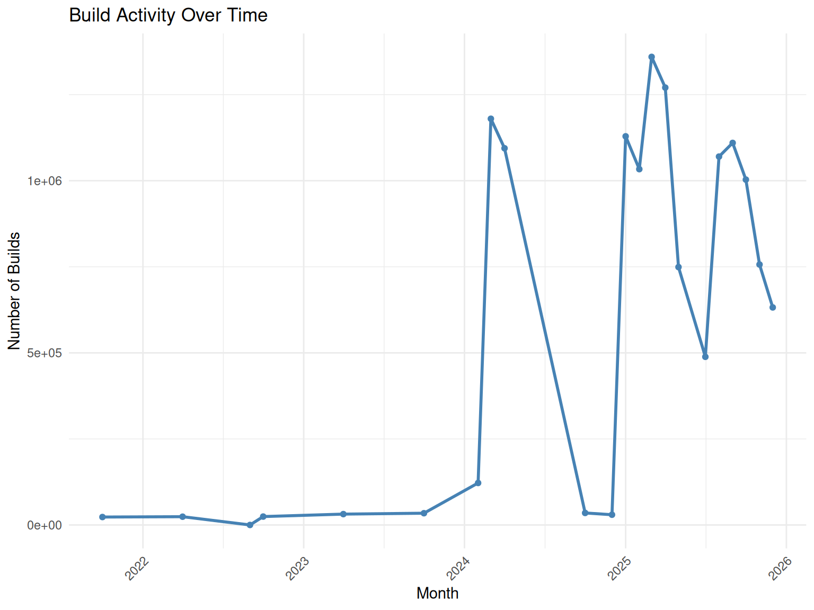
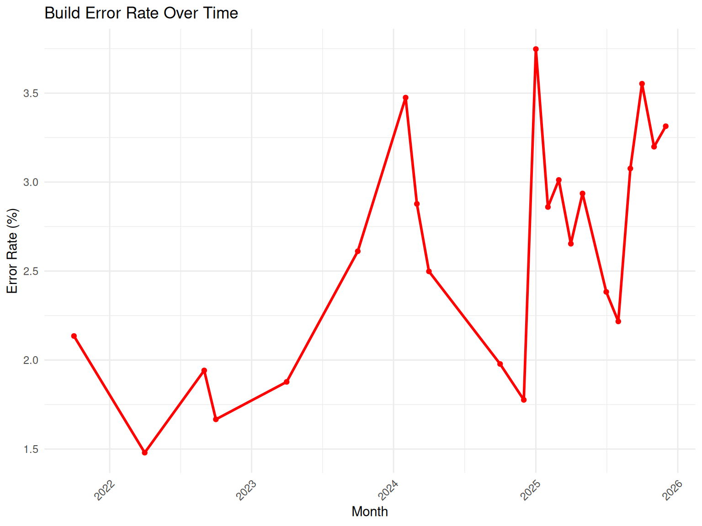

BiocBuildDB Data Use Cases
Background
The BiocBuildDB package provides access to years of Bioconductor build system data, representing a comprehensive record of package builds across:
- Thousands of packages in the Bioconductor ecosystem
- Multiple R versions spanning several years of development
- Multiple platforms including Linux, macOS, and Windows
- Different build stages (install, build, check)
The Bioconductor build system runs regularly, testing all packages to ensure they meet quality standards and work correctly across different platforms. This dataset captures the results of these builds, including:
- Build status (OK, WARNING, ERROR, TIMEOUT)
- Package version information
- Git commit information
- Maintainer details
- Propagation status to the community
This vignette demonstrates how to use BiocBuildDB functions to explore and analyze this rich dataset to understand:
- Package build history and stability
- Platform-specific issues
- Package growth over time
- Common failure patterns
Setup
Accessing BiocBuildDB Data
Getting All Available Tables
The simplest way to start is to download all available data tables. The get_all_bbs_tables() function retrieves all three parquet files containing Bioconductor build data:
# Download all available tables
# This will cache the tables for quick subsequent access
get_all_bbs_tables()The function downloads three tables:
- build_summary: Results of each build stage for every package
- info: Package metadata including version, maintainer, and git information
- propagation_status: Information about package propagation to the community
Getting Individual Tables
You can also retrieve individual tables using get_bbs_table():
# Get the build summary table
build_summary <- get_bbs_table("build_summary")
# Get the info table
info <- get_bbs_table("info")
# Get the propagation status table
propagation_status <- get_bbs_table("propagation_status")Once downloaded, subsequent calls to these functions will use cached data, making analysis much faster.
Package-Specific Queries
Package Release Information
The get_package_release_info() function retrieves version and git information for a package across all Bioconductor releases:
# Get release information for BiocFileCache
bfc_releases <- get_package_release_info("BiocFileCache")
bfc_releases
#> # A tibble: 11 × 5
#> Package Version git_branch git_last_commit git_last_commit_date
#> <chr> <chr> <chr> <chr> <dttm>
#> 1 BiocFileCache 2.0.0 RELEASE_3_13 280a8f9 2021-05-19 16:26:36
#> 2 BiocFileCache 2.2.1 RELEASE_3_14 cc91212 2022-01-20 13:21:33
#> 3 BiocFileCache 2.4.0 RELEASE_3_15 2c00eee 2022-04-26 15:39:42
#> 4 BiocFileCache 2.6.1 RELEASE_3_16 fdeb0ad 2023-02-17 11:39:09
#> 5 BiocFileCache 2.8.0 RELEASE_3_17 d088b32 2023-04-25 14:53:05
#> 6 BiocFileCache 2.10.2 RELEASE_3_18 c95edcc 2024-03-27 16:42:13
#> 7 BiocFileCache 2.12.0 RELEASE_3_19 a655653 2024-04-30 14:56:59
#> 8 BiocFileCache 2.14.0 RELEASE_3_20 66862c5 2024-10-29 15:18:07
#> 9 BiocFileCache 2.16.2 RELEASE_3_21 22fec96 2025-08-25 12:44:02
#> 10 BiocFileCache 3.0.0 RELEASE_3_22 81fd6e0 2025-10-29 15:37:29
#> 11 BiocFileCache 3.1.0 devel c4f8ba6 2025-10-29 15:37:29This shows:
- Package versions across different Bioconductor releases
- Git branches (devel, RELEASE_3_22, etc.)
- Git commit hashes
- Last commit dates
This is useful for tracking when a package was updated in different Bioconductor releases.
Package Error Counts
The package_error_count() function provides statistics on how often a package has failed during builds:
# Get error counts for BiocFileCache
bfc_errors <- package_error_count("BiocFileCache")
bfc_errors
#> # A tibble: 408 × 6
#> node version stage count_total count_error git_branch
#> <chr> <pckg_vrs> <chr> <int> <int> <chr>
#> 1 machv2 2.0.0 buildbin 1 0 RELEASE_3_13
#> 2 machv2 2.0.0 buildsrc 1 0 RELEASE_3_13
#> 3 machv2 2.0.0 checksrc 1 0 RELEASE_3_13
#> 4 machv2 2.0.0 install 1 0 RELEASE_3_13
#> 5 nebbiolo1 2.0.0 buildsrc 1 0 RELEASE_3_13
#> 6 nebbiolo1 2.0.0 checksrc 1 0 RELEASE_3_13
#> 7 nebbiolo1 2.0.0 install 1 0 RELEASE_3_13
#> 8 tokay2 2.0.0 buildbin 1 0 RELEASE_3_13
#> 9 tokay2 2.0.0 buildsrc 1 0 RELEASE_3_13
#> 10 tokay2 2.0.0 checksrc 1 0 RELEASE_3_13
#> # ℹ 398 more rows
# Filter to a specific branch
bfc_errors_release <- package_error_count("BiocFileCache", branch = "RELEASE_3_22")
bfc_errors_release
#> # A tibble: 22 × 6
#> node version stage count_total count_error git_branch
#> <chr> <pckg_vrs> <chr> <int> <int> <chr>
#> 1 kjohnson1 3.0.0 buildbin 6 0 RELEASE_3_22
#> 2 kjohnson1 3.0.0 buildsrc 8 2 RELEASE_3_22
#> 3 kjohnson1 3.0.0 checksrc 6 2 RELEASE_3_22
#> 4 kjohnson1 3.0.0 install 8 0 RELEASE_3_22
#> 5 kjohnson3 3.0.0 buildbin 8 0 RELEASE_3_22
#> 6 kjohnson3 3.0.0 buildsrc 10 2 RELEASE_3_22
#> 7 kjohnson3 3.0.0 checksrc 8 0 RELEASE_3_22
#> 8 kjohnson3 3.0.0 install 10 0 RELEASE_3_22
#> 9 lconway 3.0.0 buildbin 4 0 RELEASE_3_22
#> 10 lconway 3.0.0 buildsrc 5 1 RELEASE_3_22
#> # ℹ 12 more rows
# Filter to a specific builder
bfc_errors_builder <- package_error_count("BiocFileCache",
builder = "nebbiolo2",
branch = "RELEASE_3_22")
bfc_errors_builder
#> # A tibble: 3 × 6
#> node version stage count_total count_error git_branch
#> <chr> <pckg_vrs> <chr> <int> <int> <chr>
#> 1 nebbiolo2 3.0.0 buildsrc 27 8 RELEASE_3_22
#> 2 nebbiolo2 3.0.0 checksrc 19 6 RELEASE_3_22
#> 3 nebbiolo2 3.0.0 install 27 0 RELEASE_3_22This returns:
- Node (builder machine name)
- Package version
- Build stage (install, build, check)
- Total number of runs
- Total number of errors
- Git branch
For the devel branch, you can filter to the most recent version:
# Get devel errors
dev_errors <- package_error_count("BiocFileCache", branch = "devel")
# Filter to current devel version
dev_errors |> filter(version == max(version))
#> # A tibble: 11 × 6
#> node version stage count_total count_error git_branch
#> <chr> <pckg_vrs> <chr> <int> <int> <chr>
#> 1 kjohnson3 3.1.0 buildbin 29 0 devel
#> 2 kjohnson3 3.1.0 buildsrc 40 11 devel
#> 3 kjohnson3 3.1.0 checksrc 29 0 devel
#> 4 kjohnson3 3.1.0 install 40 0 devel
#> 5 lconway 3.1.0 buildbin 9 0 devel
#> 6 lconway 3.1.0 buildsrc 11 2 devel
#> 7 lconway 3.1.0 checksrc 9 1 devel
#> 8 lconway 3.1.0 install 11 0 devel
#> 9 nebbiolo1 3.1.0 buildsrc 51 14 devel
#> 10 nebbiolo1 3.1.0 checksrc 37 8 devel
#> 11 nebbiolo1 3.1.0 install 51 0 develExploratory Data Analysis
Package Growth Over Time
Let’s explore how the number of Bioconductor packages has grown over time:
# Get info table
info <- get_bbs_table("info")
# Count unique packages by branch
package_counts <- info |>
group_by(git_branch) |>
summarise(
n_packages = n_distinct(Package),
.groups = "drop"
) |>
arrange(desc(n_packages))
# Display the counts
package_counts
#> # A tibble: 12 × 2
#> git_branch n_packages
#> <chr> <int>
#> 1 devel 3031
#> 2 RELEASE_3_22 2885
#> 3 RELEASE_3_21 2859
#> 4 RELEASE_3_19 2816
#> 5 RELEASE_3_20 2807
#> 6 RELEASE_3_18 2778
#> 7 RELEASE_3_17 2723
#> 8 RELEASE_3_16 2670
#> 9 RELEASE_3_15 2622
#> 10 RELEASE_3_14 2528
#> 11 RELEASE_3_13 2475
#> 12 master 33
# Visualize package counts by branch
ggplot(package_counts, aes(x = reorder(git_branch, n_packages), y = n_packages)) +
geom_col(fill = "steelblue") +
coord_flip() +
labs(
title = "Number of Packages by Bioconductor Branch",
x = "Branch",
y = "Number of Packages"
) +
theme_minimal()
Build Status Distribution
Understanding the distribution of build statuses helps identify overall system health:
# Get build summary table
build_summary <- get_bbs_table("build_summary")
# Count build statuses
status_counts <- build_summary |>
count(status) |>
arrange(desc(n))
status_counts
#> # A tibble: 4 × 2
#> status n
#> <chr> <int>
#> 1 OK 12216633
#> 2 WARNINGS 595305
#> 3 ERROR 371141
#> 4 TIMEOUT 17173
# Visualize status distribution
ggplot(status_counts, aes(x = reorder(status, n), y = n)) +
geom_col(aes(fill = status)) +
scale_fill_manual(values = c(
"OK" = "green3",
"WARNING" = "orange",
"ERROR" = "red",
"TIMEOUT" = "darkred"
)) +
coord_flip() +
labs(
title = "Distribution of Build Statuses",
x = "Status",
y = "Count"
) +
theme_minimal() +
theme(legend.position = "none")
Platform-Specific Analysis
Different platforms may have different build characteristics:
# Analyze build status by platform (node)
platform_status <- build_summary |>
group_by(node, status) |>
summarise(count = n(), .groups = "drop") |>
group_by(node) |>
mutate(
total = sum(count),
percentage = count / total * 100
) |>
ungroup()
# Show error rates by platform
error_rates <- platform_status |>
filter(status %in% c("ERROR", "TIMEOUT")) |>
group_by(node) |>
summarise(
error_count = sum(count),
total = first(total),
error_rate = sum(percentage),
.groups = "drop"
) |>
arrange(desc(error_rate))
head(error_rates, 10)
#> # A tibble: 10 × 4
#> node error_count total error_rate
#> <chr> <int> <int> <dbl>
#> 1 riesling1 12 88 13.6
#> 2 kakapo1 62 558 11.1
#> 3 biocgpu 189 1736 10.9
#> 4 amarone 102 1137 8.97
#> 5 taishan 53826 911753 5.90
#> 6 kunpeng2 50358 907145 5.55
#> 7 nebbiolo1 50669 1681259 3.01
#> 8 kjohnson3 64357 2189528 2.94
#> 9 kjohnson2 251 8628 2.91
#> 10 palomino3 11216 436957 2.57Build Stage Analysis
Understanding which build stage most often fails:
# Analyze failures by stage
stage_failures <- build_summary |>
filter(status %in% c("ERROR", "TIMEOUT")) |>
count(stage, status) |>
arrange(desc(n))
stage_failures
#> # A tibble: 8 × 3
#> stage status n
#> <chr> <chr> <int>
#> 1 buildsrc ERROR 196525
#> 2 checksrc ERROR 105653
#> 3 install ERROR 68101
#> 4 checksrc TIMEOUT 9227
#> 5 buildsrc TIMEOUT 7857
#> 6 buildbin ERROR 862
#> 7 buildbin TIMEOUT 57
#> 8 install TIMEOUT 32
# Visualize
ggplot(stage_failures, aes(x = stage, y = n, fill = status)) +
geom_col() +
scale_fill_manual(values = c("ERROR" = "red", "TIMEOUT" = "darkred")) +
labs(
title = "Build Failures by Stage",
x = "Build Stage",
y = "Number of Failures",
fill = "Status"
) +
theme_minimal()
Most Problematic Packages
Identify packages with the highest error rates:
# Find packages with most errors
package_errors <- build_summary |>
filter(status %in% c("ERROR", "TIMEOUT")) |>
count(package, status) |>
group_by(package) |>
summarise(
total_errors = sum(n),
.groups = "drop"
) |>
arrange(desc(total_errors))
# Top 10 packages with most errors
head(package_errors, 10)
#> # A tibble: 10 × 2
#> package total_errors
#> <chr> <int>
#> 1 lapmix 2138
#> 2 netZooR 1693
#> 3 hypeR 1685
#> 4 XNAString 1450
#> 5 Repitools 1444
#> 6 ChemmineOB 1442
#> 7 ccfindR 1422
#> 8 gpuMagic 1392
#> 9 graper 1388
#> 10 gespeR 1375Maintainer Analysis
Analyze package maintenance patterns:
# Get unique packages per maintainer
maintainer_packages <- info |>
group_by(Maintainer) |>
summarise(
n_packages = n_distinct(Package),
packages = paste(unique(Package), collapse = ", "),
.groups = "drop"
) |>
arrange(desc(n_packages))
# Top maintainers by number of packages
head(maintainer_packages, 10)
#> # A tibble: 10 × 3
#> Maintainer n_packages packages
#> <chr> <int> <chr>
#> 1 Bioconductor Package Maintainer 72 GSE62944, hgu2beta7, TENxBrainDat…
#> 2 Aaron Lun 62 celldex, chipseqDBData, DropletTe…
#> 3 Hervé Pagès 25 pasillaBamSubset, RNAseqData.HNRN…
#> 4 VJ Carey 25 harbChIP, leeBamViews, MAQCsubset…
#> 5 Laurent Gatto 24 depmap, RforProteomics, CTdata, h…
#> 6 Marcel Ramos 24 curatedTCGAData, SingleCellMultiM…
#> 7 Michael Love 20 airway, fission, macrophage, null…
#> 8 Mike Smith 16 BeadArrayUseCases, HD2013SGI, min…
#> 9 Felix G.M. Ernst 15 RNAmodR.Data, EpiTxDb, Modstrings…
#> 10 Guangchuang Yu 15 ChIPseeker, clusterProfiler, DOSE…
# Distribution of packages per maintainer
ggplot(maintainer_packages, aes(x = n_packages)) +
geom_histogram(binwidth = 1, fill = "steelblue", color = "white") +
labs(
title = "Distribution of Packages per Maintainer",
x = "Number of Packages",
y = "Number of Maintainers"
) +
theme_minimal()
Temporal Analysis
Analyze build patterns over time:
# Analyze build patterns over time
build_summary <- build_summary |>
mutate(
date = as.Date(startedat),
month = format(startedat, "%Y-%m")
)
# Build activity by month
monthly_builds <- build_summary |>
count(month) |>
mutate(month_date = as.Date(paste0(month, "-01")))
ggplot(monthly_builds, aes(x = month_date, y = n)) +
geom_line(color = "steelblue", linewidth = 1) +
geom_point(color = "steelblue") +
labs(
title = "Build Activity Over Time",
x = "Month",
y = "Number of Builds"
) +
theme_minimal() +
theme(axis.text.x = element_text(angle = 45, hjust = 1))
# Error rate over time
monthly_errors <- build_summary |>
group_by(month) |>
summarise(
total = n(),
errors = sum(status %in% c("ERROR", "TIMEOUT")),
error_rate = errors / total * 100,
.groups = "drop"
) |>
mutate(month_date = as.Date(paste0(month, "-01")))
ggplot(monthly_errors, aes(x = month_date, y = error_rate)) +
geom_line(color = "red", linewidth = 1) +
geom_point(color = "red") +
labs(
title = "Build Error Rate Over Time",
x = "Month",
y = "Error Rate (%)"
) +
theme_minimal() +
theme(axis.text.x = element_text(angle = 45, hjust = 1))
Conclusion
The BiocBuildDB package provides powerful tools for analyzing Bioconductor build system data. This vignette demonstrated:
-
Data Access: Using
get_bbs_table()andget_all_bbs_tables()to retrieve build data -
Package-Specific Queries: Using
get_package_release_info()andpackage_error_count()to analyze individual packages - Exploratory Analysis: Examining package growth, build statuses, platform differences, and temporal patterns
This dataset can help package developers, maintainers, and the Bioconductor community to:
- Monitor package build health
- Identify platform-specific issues
- Track package evolution over time
- Understand common failure patterns
- Improve package quality and reliability
For more information about specific functions, see their documentation with ?function_name.